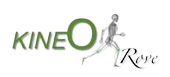

<DOCTYPE html>
    <html lang="fr">
    <link rel="stylesheet" href="style.css">
    <link rel="preconnect" href="https://fonts.googleapis.com">
    <link rel="preconnect" href="https://fonts.gstatic.com" crossorigin>
    <link href="https://fonts.googleapis.com/css2?family=Open+Sans:wght@650&display=swap" rel="stylesheet">
    <link rel="stylesheet" href="https://cdnjs.cloudflare.com/ajax/libs/font-awesome/6.4.0/css/all.min.css" integrity="sha512-iecdLmaskl7CVkqkXNQ/ZH/XLlvWZOJyj7Yy7tcenmpD1ypASozpmT/E0iPtmFIB46ZmdtAc9eNBvH0H/ZpiBw==" crossorigin="anonymous" referrerpolicy="no-referrer" />
    <head>
    <meta name="viewport" content="width=device-width, initial-scale=1.0">
    <meta charset="UTF-8">
    <title>Cabinet - Mentions Légales</title>
    <meta name="description" content="Cabinet de kinesisthérapie, ostéopathie et remise en forme situé au Rove.">
    </head>
    <body>
        <header>
                <nav>
                    <div class="toggle">
                        <i class="fa-solid fa-bars ouvrir"></i>
                    </div>
                    <ul class="menu">
                        <li><a href="index.html">ACCUEIL</a></li>
                        <li><a href="kineo.html">KINEO</a></li>
                        <li><a href="mouveo.html">MOUVEO</a></li>
                        <li><a href="osteo.html">OSTEO</a></li>
                        <li><a href="a-propos-de-nous.html">A PROPOS DE NOUS</a></li>
                    </ul>
                </nav>
        </header>
        <div class="titre-form-cartes" style="color : #77aad9 !important">
            <h1>MENTIONS LEGALES</h1>
            <div class="rectangle-gris">
            </div>
        </div>
        
        <section class="form-mentions-legales"> 
            <div class="text-osteo-osteo">
                <ul>
                    <li>Diplomé d'ostéopathie à l'IFSO de Rennes en 2013</li>
                    <li>Master d'Osteopathie au RORI à Lyon en 2005</li>
                    <li>Diplome d'equilibration Neuro-Musculaire (méthode Francois Soulier) à Nice en 2004</li>
                    <li>Diplôme d'Etat de Masso-Kinésithérapie à l'IFMK de Marseille en 2000</li>
                    <li>Diplomé d'ostéopathie à l'IFSO de Rennes en 2013</li>
                    <li>Master d'Osteopathie au RORI à Lyon en 2005</li>
                    <li>Diplome d'equilibration Neuro-Musculaire (méthode Francois Soulier) à Nice en 2004</li>
                    <li>Diplôme d'Etat de Masso-Kinésithérapie à l'IFMK de Marseille en 2000</li>
                </ul>
            </div>
            <div class="text-osteo-osteo">
                <ul>
                    <li>Diplomé d'ostéopathie à l'IFSO de Rennes en 2013</li>
                    <li>Master d'Osteopathie au RORI à Lyon en 2005</li>
                    <li>Diplome d'equilibration Neuro-Musculaire (méthode Francois Soulier) à Nice en 2004</li>
                    <li>Diplôme d'Etat de Masso-Kinésithérapie à l'IFMK de Marseille en 2000</li>
                    <li>Diplomé d'ostéopathie à l'IFSO de Rennes en 2013</li>
                    <li>Master d'Osteopathie au RORI à Lyon en 2005</li>
                    <li>Diplome d'equilibration Neuro-Musculaire (méthode Francois Soulier) à Nice en 2004</li>
                    <li>Diplôme d'Etat de Masso-Kinésithérapie à l'IFMK de Marseille en 2000</li>
                </ul>
            </div>
            <div class="text-osteo-osteo">
                <ul>
                    <li>Diplomé d'ostéopathie à l'IFSO de Rennes en 2013</li>
                    <li>Master d'Osteopathie au RORI à Lyon en 2005</li>
                    <li>Diplome d'equilibration Neuro-Musculaire (méthode Francois Soulier) à Nice en 2004</li>
                    <li>Diplôme d'Etat de Masso-Kinésithérapie à l'IFMK de Marseille en 2000</li>
                    <li>Diplomé d'ostéopathie à l'IFSO de Rennes en 2013</li>
                    <li>Master d'Osteopathie au RORI à Lyon en 2005</li>
                    <li>Diplome d'equilibration Neuro-Musculaire (méthode Francois Soulier) à Nice en 2004</li>
                    <li>Diplôme d'Etat de Masso-Kinésithérapie à l'IFMK de Marseille en 2000</li>
                </ul>

            </div>
        </section>
        <footer>
            <section class="footer">
                <div class="footer-logos">
                    
                    
                </div>
                <div class="footer-text">
                    <a href="mentions-legales.html">Mentions Légales</a>
                </div>
                <div class="footer-reseaux">
                    <a href="https://www.facebook.com/KineORove"></a>
                    <a href="https://instagram.com/kine_o_rove?igshid=MzRlODBiNWFlZA=="></a>
                </div>
            </section>
        </footer>
        <script src="app.js"></script>
    </body>
    
    </html>
        